Since 2009, various programs have saved the lives of more than two-thirds of children who would have died
without them. Only about 7 percent of child births resulted in deaths in 2014, on mark to reach 6 percent in
2015. However, Malawi is off-mark to meet its goal of reducing maternal mortality.
In 2004, an average of 984 pregnant mothers died per 100,000 live births. In 2013, the maternal mortality
rate in Malawi was half that, yet still far off-mark for the U.N. Millennium goal of 155 per 100,000 live births.
The main causes of maternal death are complications with severe bleeding, abortion complications, pregnancy-
induced high blood pressure, infection, obstructed labor and blood clots. Preexisting conditions also accounted
for a quarter of all maternal deaths. These deaths indicate conditions of poverty and malnutrition, two important
aspects to a healthy pregnancy.
The figures below each represent women and mothers in Malawi who have died due to complications with pregnancy
or birth in 2013. Use the buttons to view the breakdown of these causes of death.
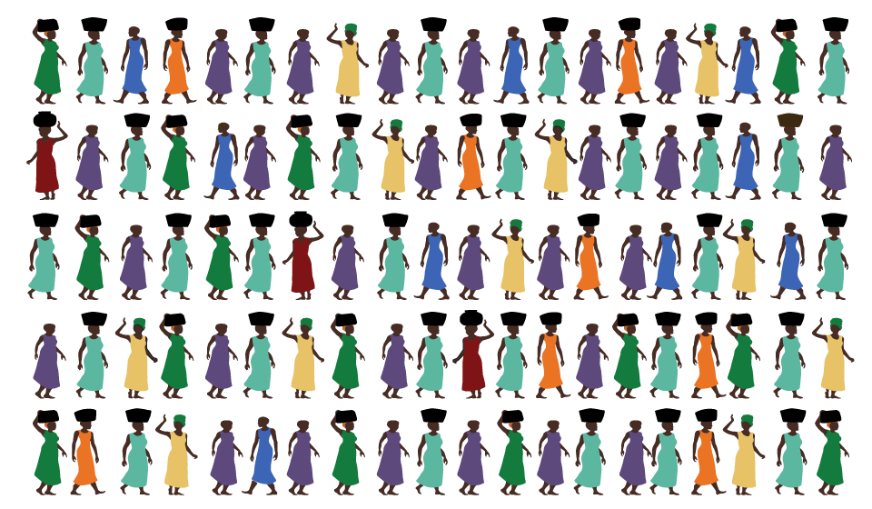
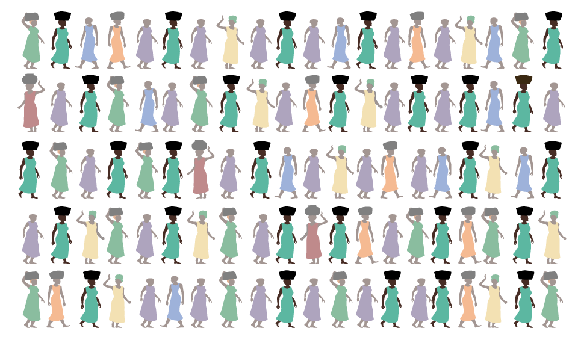
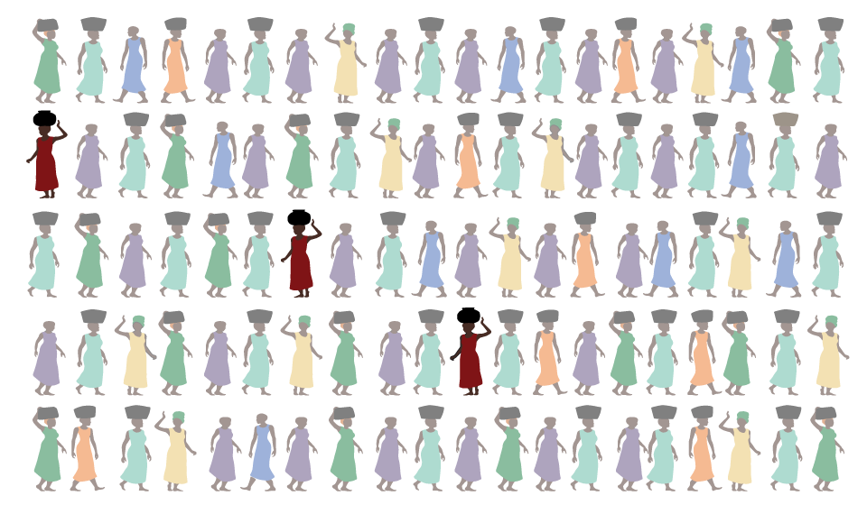
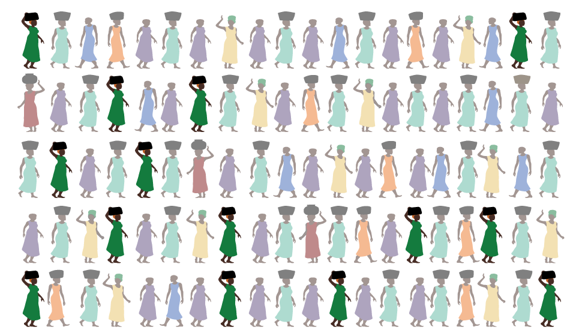
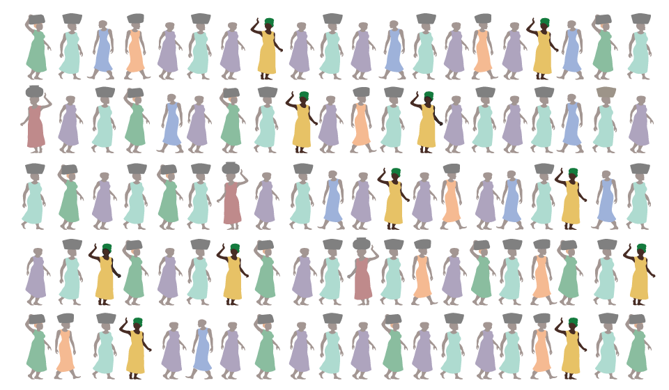
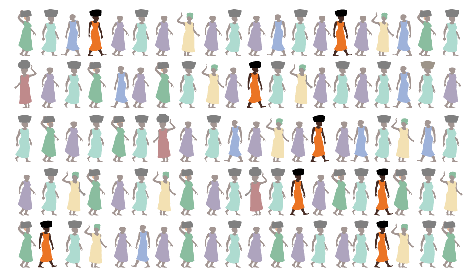
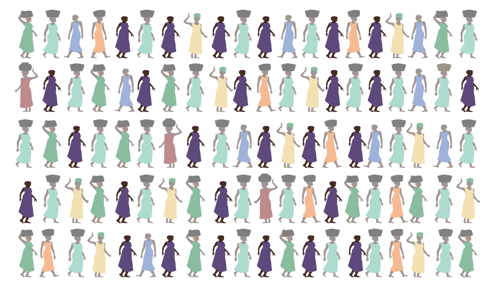
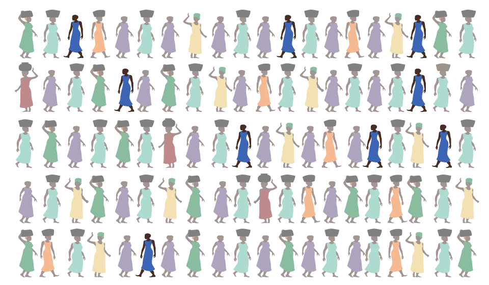
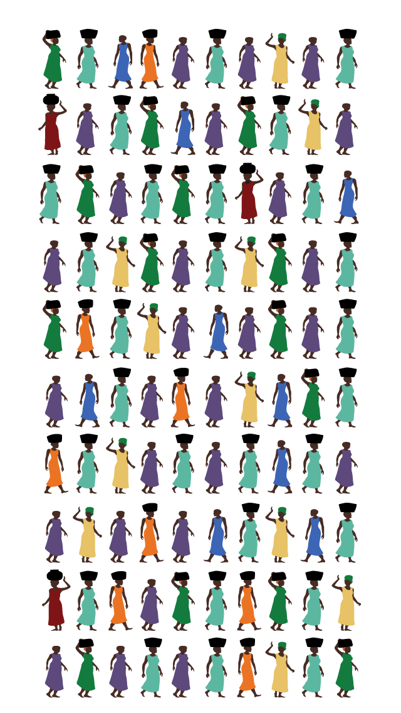
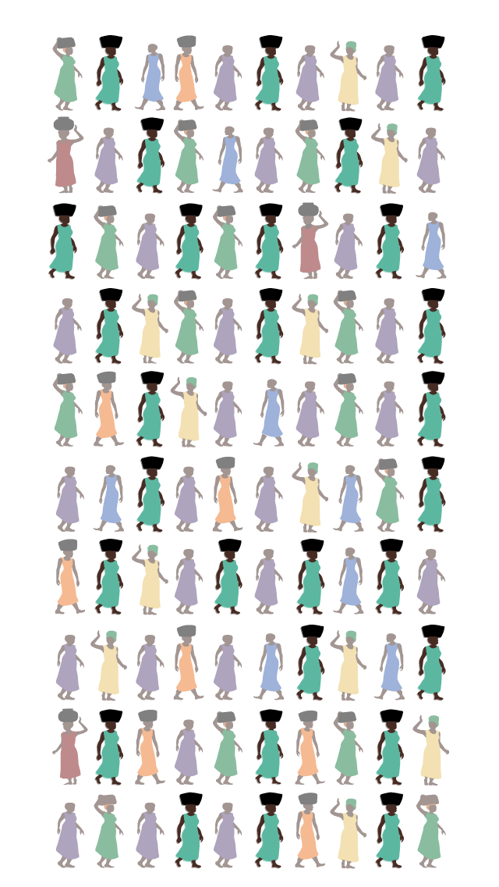
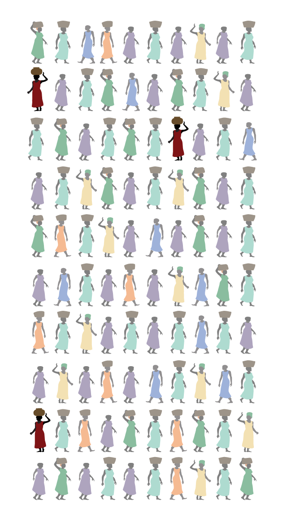
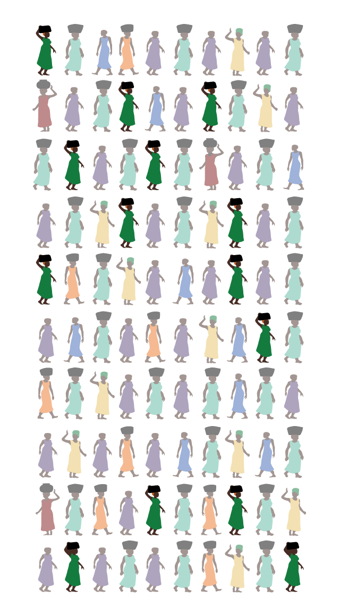
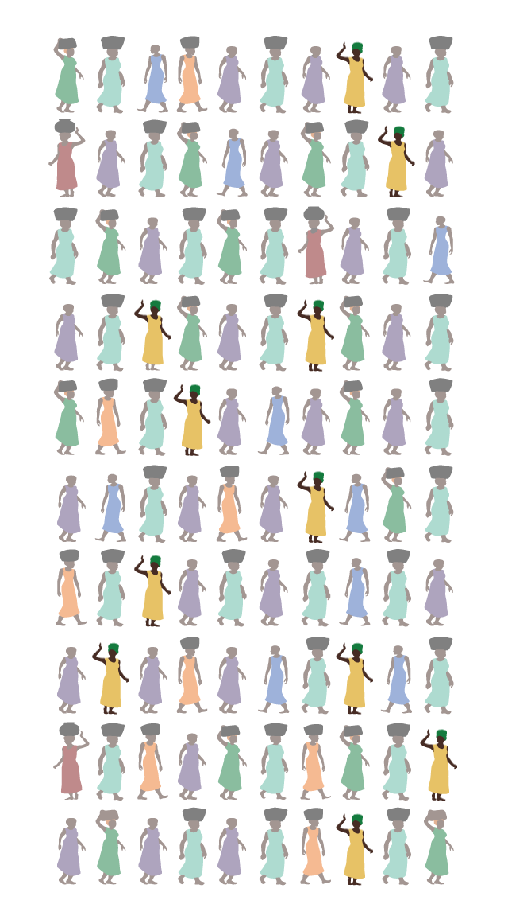
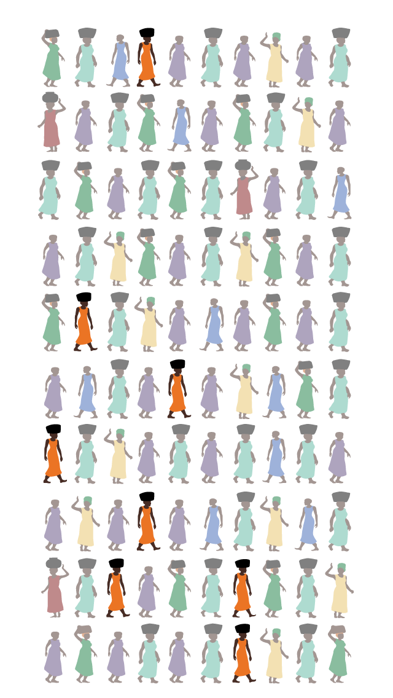
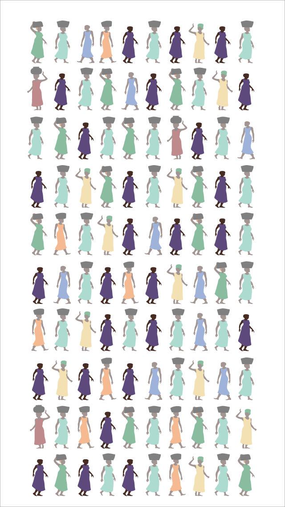
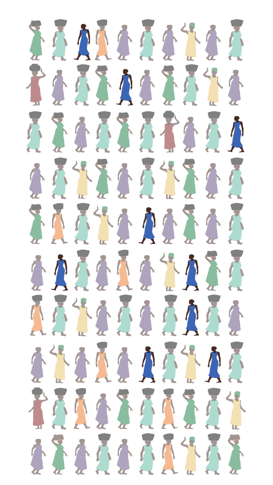
Each figure of a woman represents 2890 women who have died from maternal health issues in
2014. Colors represent the various causes of death.